PDF 扫描件加书签步骤
1 支持的功能
- 从目录页识别出文字和页码信息
- 生成树状目录，并添加树状书签到 PDF 中
- 支持人工校准，提供便捷的跳转和预览，方便校准
移动端操作演示：
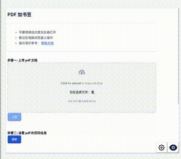
高清版：配置页码信息视频
2 操作演示
选择 PDF 文件并配置页码信息:
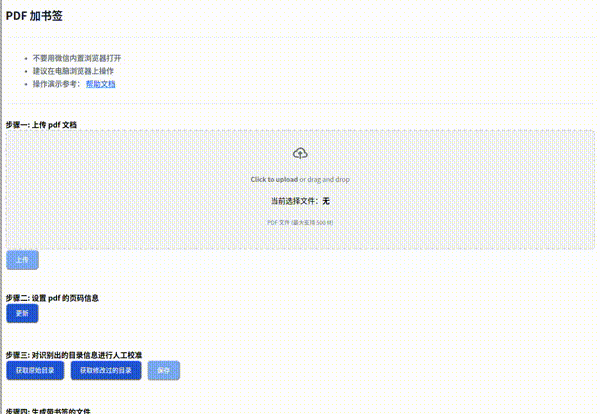
高清版：配置页码信息视频
编辑识别出的目录信息，生成带书签文件:
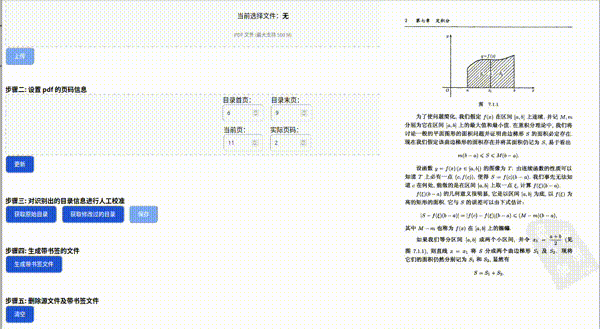
高清版：目录编辑视频
3 PDF 文件确认
确认 PDF 为扫描件，且包含目录页。
4 确认目录页码范围
确认目录首页对应的 PDF 页码
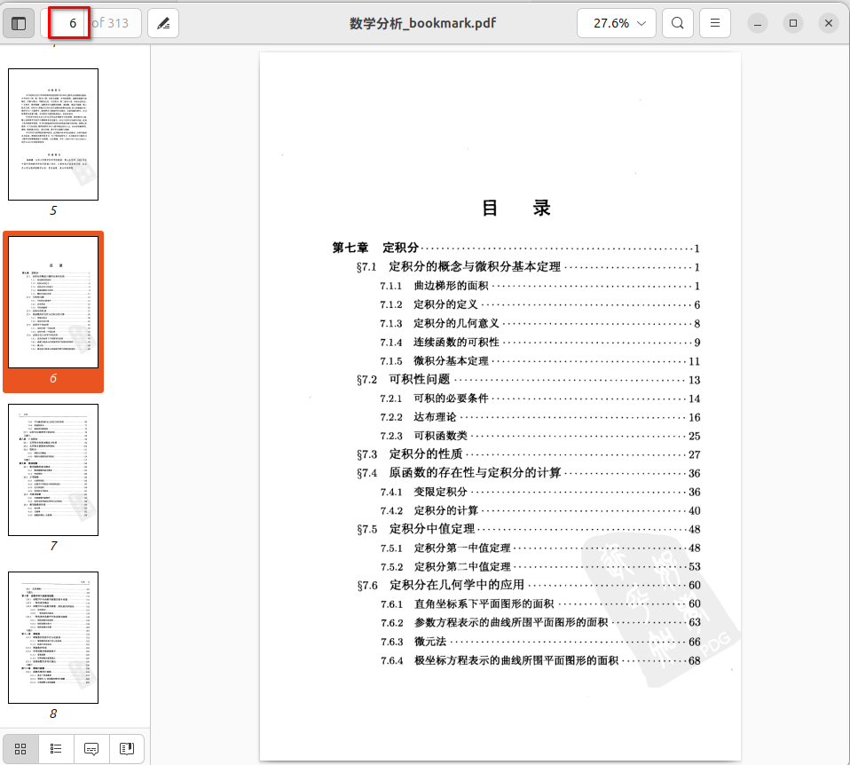
如图为第 6 页。
确认目录末页对应的 PDF 页码
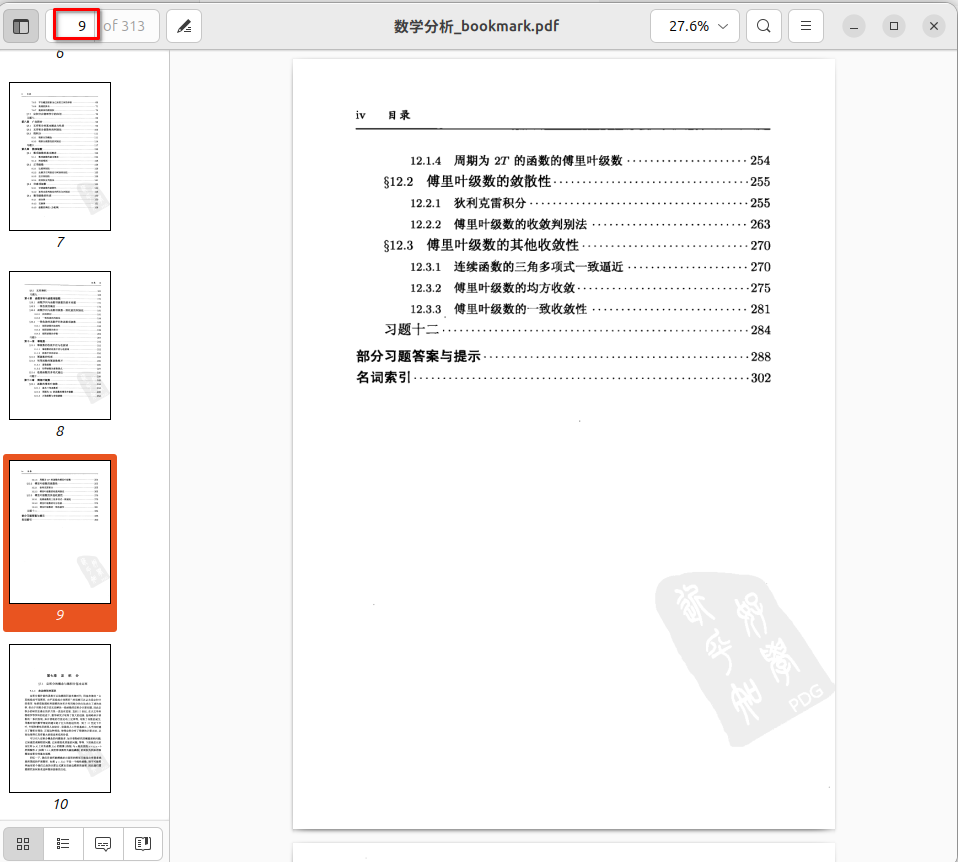
如图为第 9 页。
5 确认正文页对应的 PDF 页码，及对应的正文实际页面
如图为某一正文页，只需找到一个含有页码的正文页即可， 其对应的 PDF 页码为第 11 页，对应正文实际页码为第 2 页。
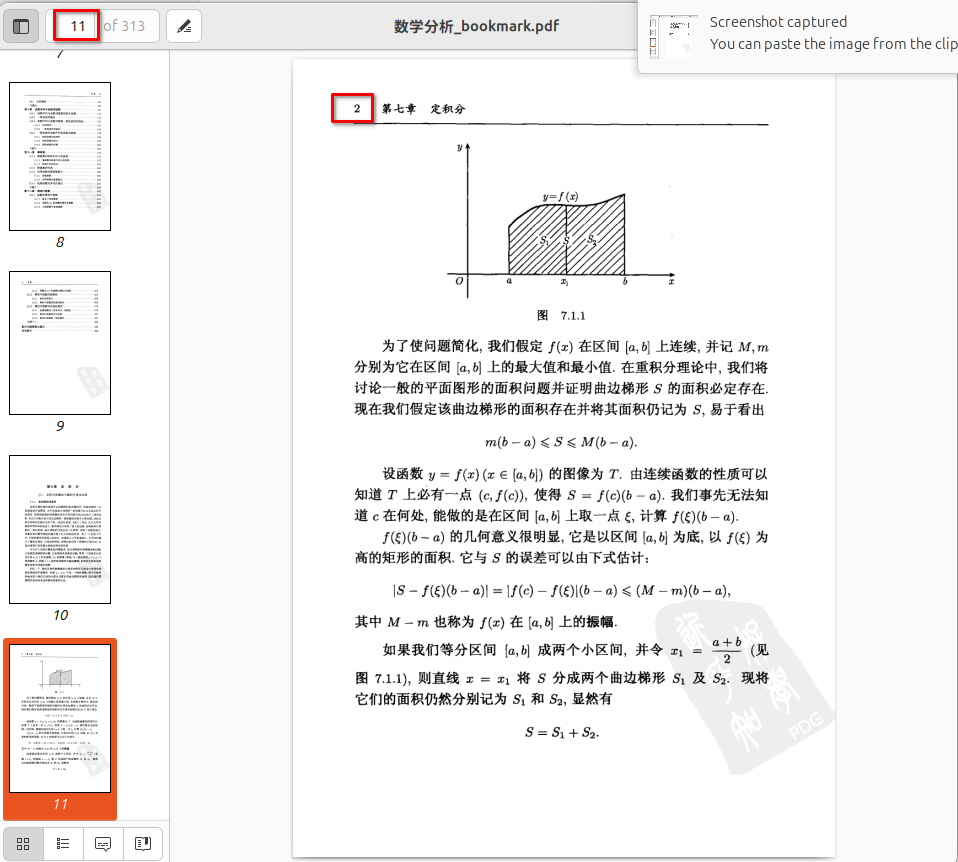
注意这一步很重要，设置错误会导致书签跳转位置不正确。
6 在 PDF 加书签工具网站上操作
-
将上面识别到的页码信息录入
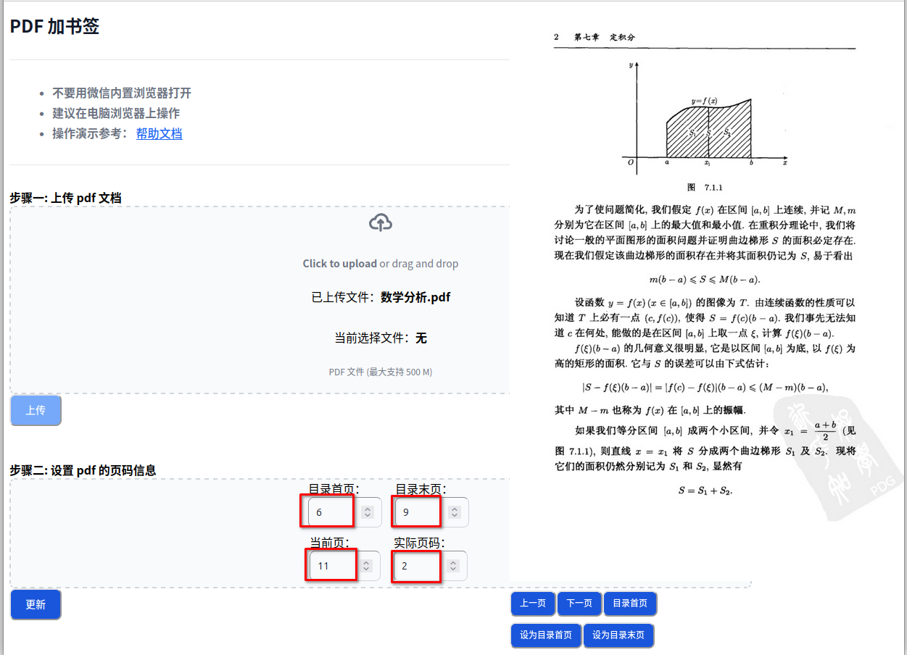
-
输入文件页面信息后，点击
更新， 将会对目录页面进行扫描， 识别出目录页的页码跳转信息，如图：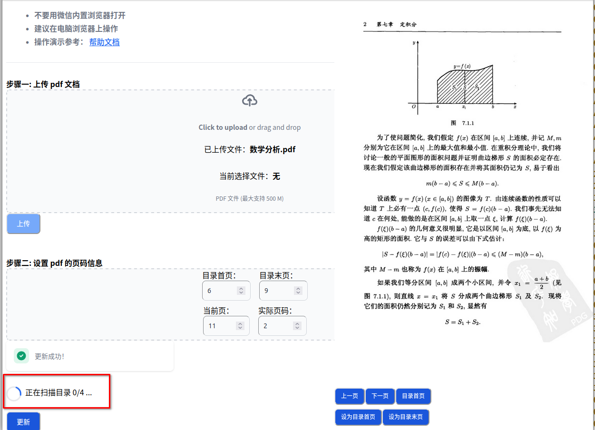
-
目录扫描成功后，将会显示扫描到的目录结果。
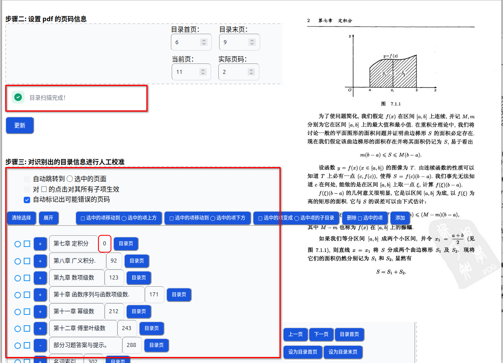
其中标注红色框的页面为可能识别错误的页面，需要手动调整修改，修改时点击
目录页， PDF 预览页将会自动跳转到该条目对应的目录页，找到正确的页码修改即可。自动跳转到 ◯ 选中的页面选中后，每次点击◯, PDF 预览页面将自动跳转到书签对 应的目标页面，此功能可以快速检查跳转是否正确，有些 PDF 文件可能缺失部分页面， 会引起书签跳转不正确的问题。其它按钮主要用于对目录树的编辑，在此略去。
编辑完成后，点击
保存，将保存的书签文件上传到服务器上，下次再编辑时点击获取修改过的目录，会从服务器上下载上次保存的书签文件显示。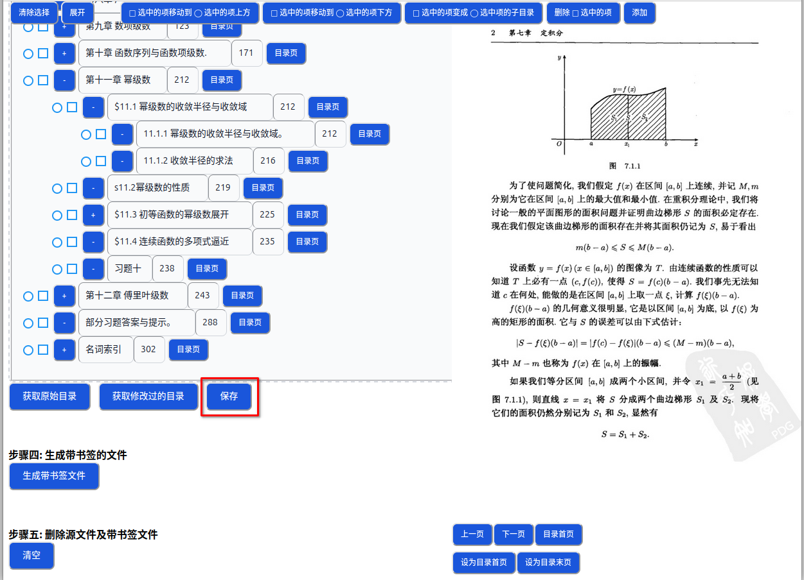
-
编辑和校准后，点击
生成书签文件，会下载生成的带书签文件。 -
最后可选择
清空，将在服务器端删除 PDF 及其书签文件。
另外，如果发现扫描出的目录项有缺失，可以点击 增加新目录项 ， 将可以在文本框中手动输入多条目录项，增加到在编辑的目录树中。
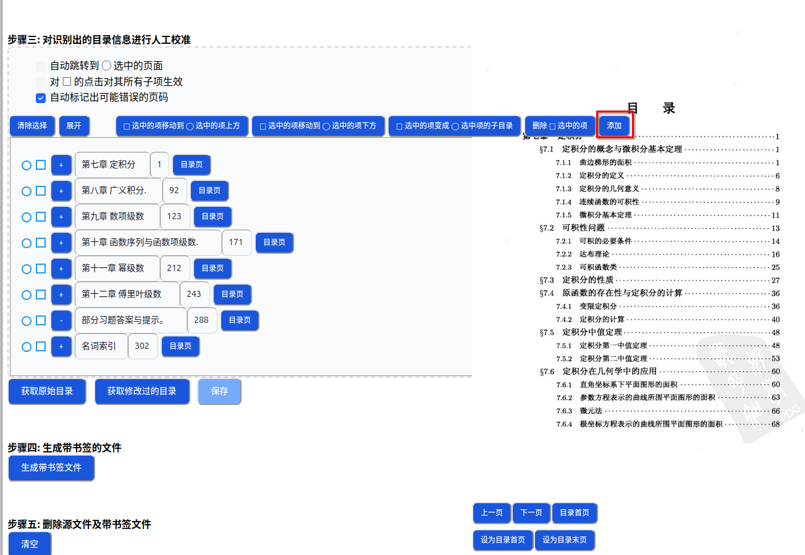